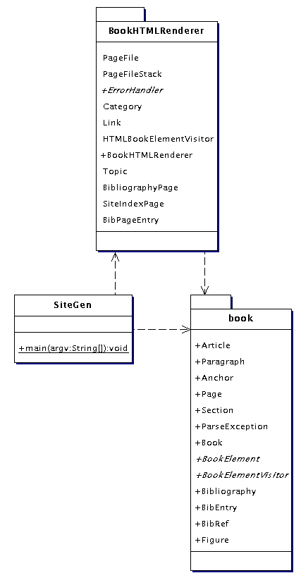
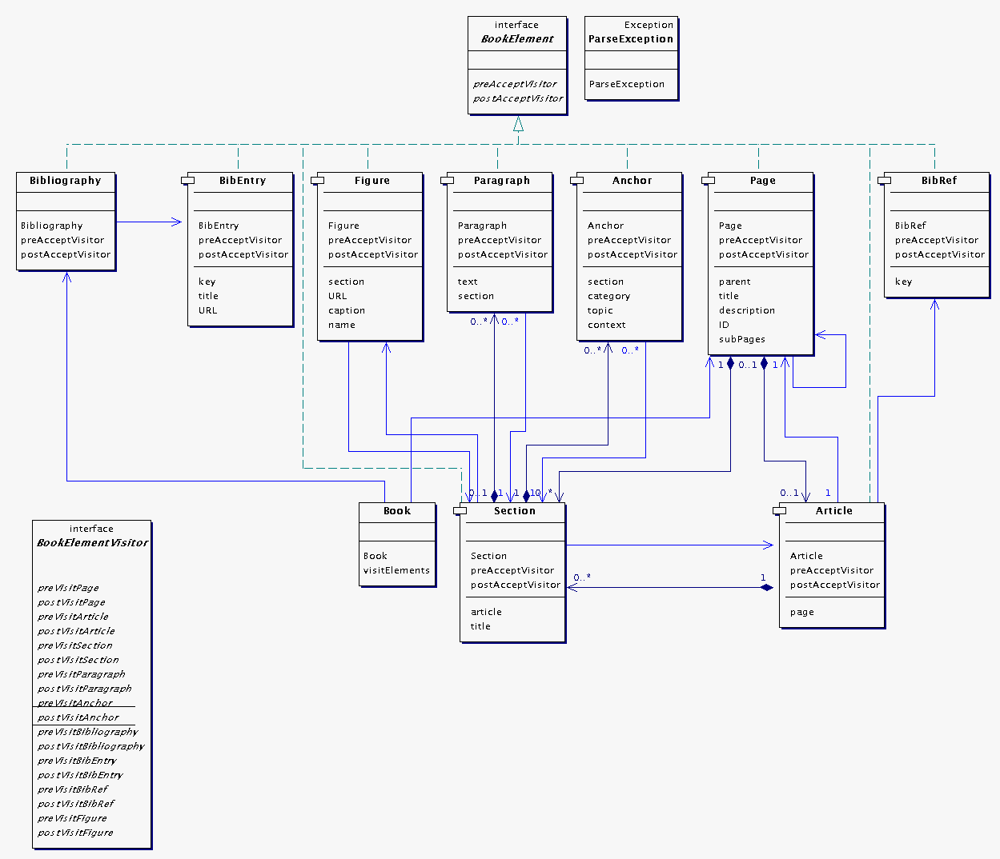
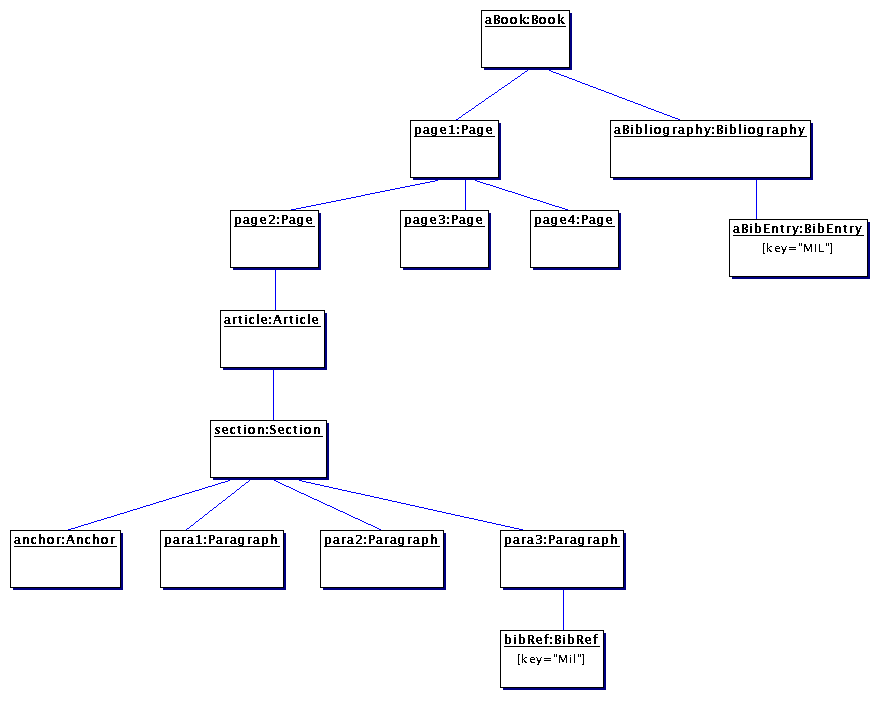
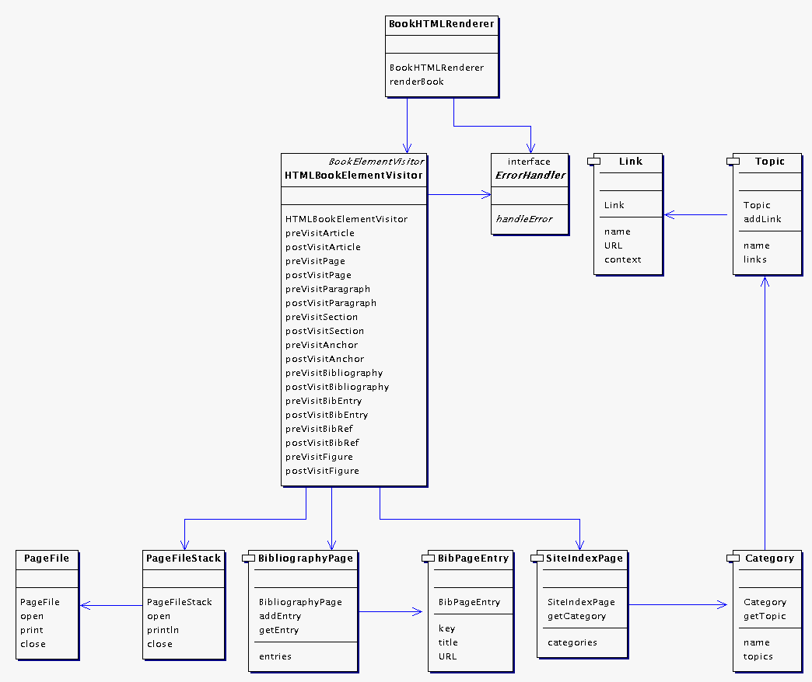

| << Back |
| <book> <page title="Dragonflies" description="A book on common New Zealand dragonflies"> <page title="Introduction" description="Introducing common dragonflies\" article="intro.xml"/> <page title="The Scarlet Damselfly" description="An article on Xanthocnemis zealandica" article="scarletDamselfly.xml"/> <page title="The Blue Damselfly" description="An article on Austrolestes colensonis" article="blueDamselfly.xml"/> <bibliography url="bibliography.xml"/> </book> |
| <article> <section
title="Appearance">
<anchor
category="Damselflies"
topic="Red"
context="The Scarlet Damselfly is bright red"/> <para>
The
Scarlet Damselfly is about 1.5" long with a bright red abdomen, though
that of the females is duller and sometimes blackish-bronze.
</para>
<figure
name="scarletDamselflyPhoto"
url="scarletDamselfly.gif"
caption="Scarlet Damselfly: actual length 1.4 inches"/> <para>
The eggs are laids when the sexes are yet in tandem, and are placed in
plant tissues under water; during this operation, the female is often
completely submerged, together with most of the male.
<bibRef
key="MIL"/>
</para>
</section>
</article> |
| <bibliography> <entry key="MIL" title="Common Insects in New Zealand - Divid Miller"/> <entry key="DAV" title="Grassgrubs and their Relatives - Julie Davies"/> </bibliography> |
 |
 |
 |
|  |